Longxing School
project developed at Holmes Miller Architects, Guangzhou (CN), 2018
A New Educational Hub
The design for the new primary and secondary school in Shenzhen is conceived as a “stage for growth”, where architecture and pedagogy merge to create dynamic, inclusive, and immersive learning environments. The spatial and volumetric layout revolves around a central axis, linking sports, teaching, and communal functions while encouraging interaction and fluid movement.
The overall configuration follows an “E-shaped” layout, allowing for an optimal distribution of classroom wings. This arrangement ensures adequate spacing between volumes, proper solar orientation, and abundant natural daylight—all essential elements for a healthy and effective learning environment.
One of the key strategies is the elevation of the sports field, which is integrated with the second floor of the buildings, effectively creating a new ground level. This topographic gesture frees up the ground floor for shared and public programs, while teacher dormitories are positioned at the top, maximizing land use efficiency within a compact urban site.
The project becomes a landscape-building, where green roofs and rooftop farming areas integrate nature and architecture, contributing to sustainability and environmental awareness. Multi-level open spaces act as informal learning zones and social connectors, enriching the students’ daily experience.
The architectural language is modular and essential, enlivened by color accents and transparent elements that improve spatial legibility and orientation. Longxing School thus emerges as a contemporary model for an urban campus—open, adaptive, and deeply rooted in the values of community and education.
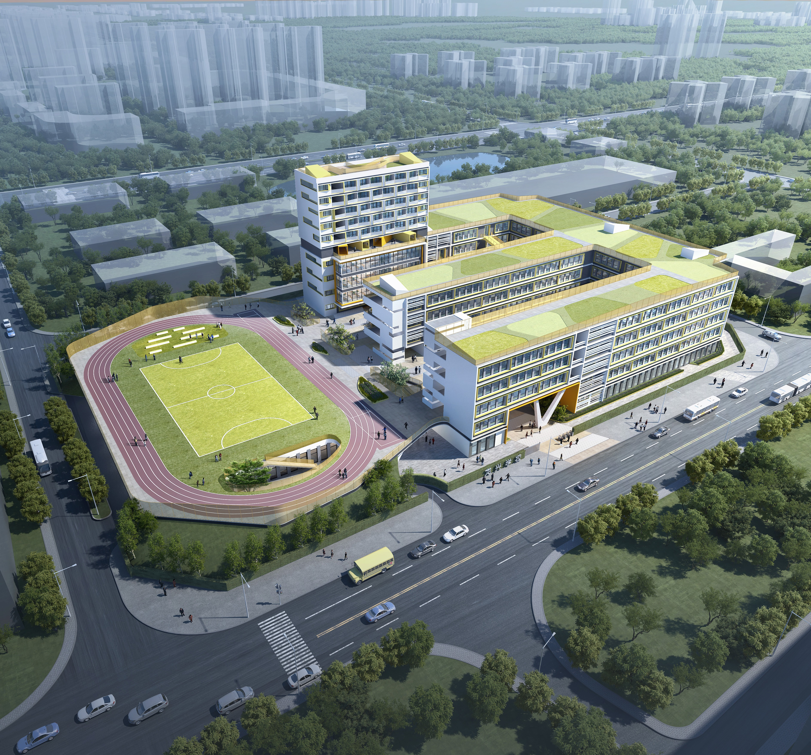
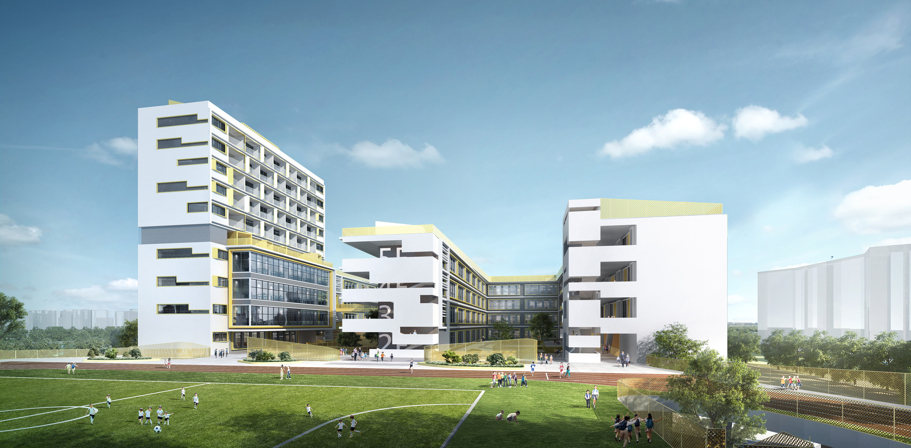
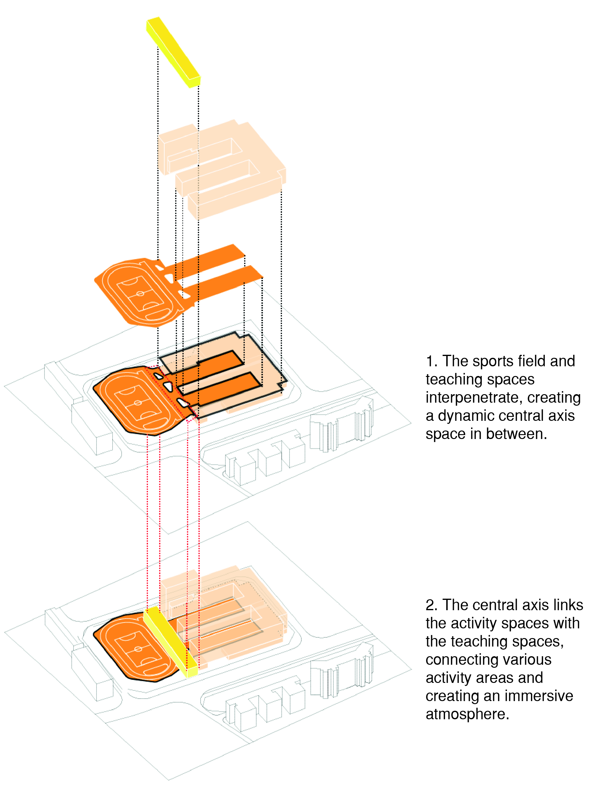
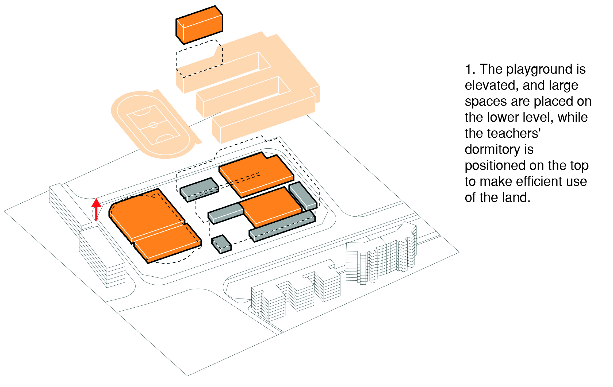
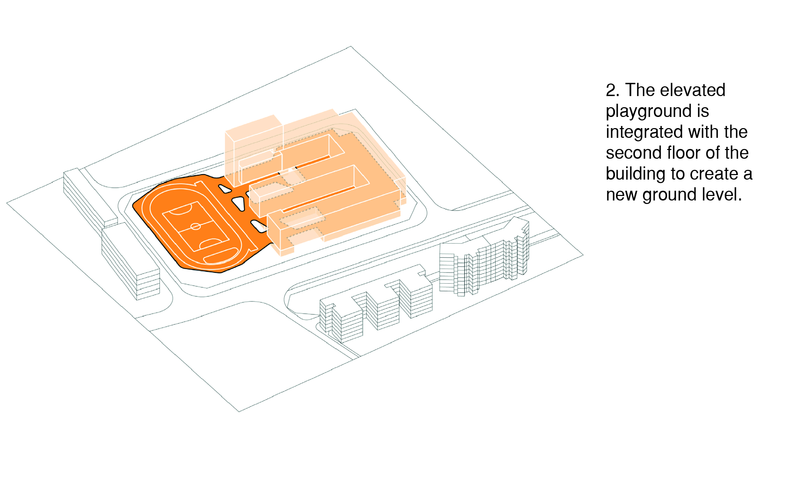
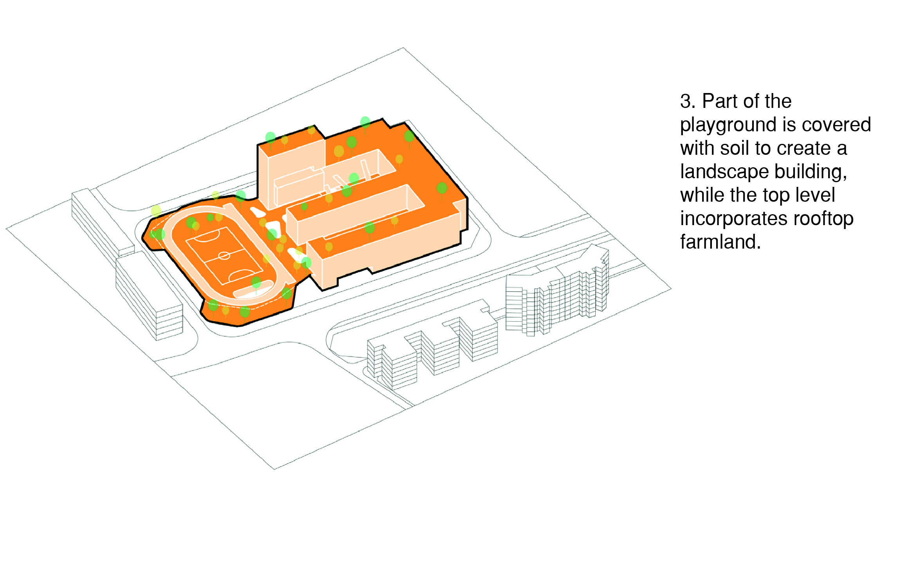
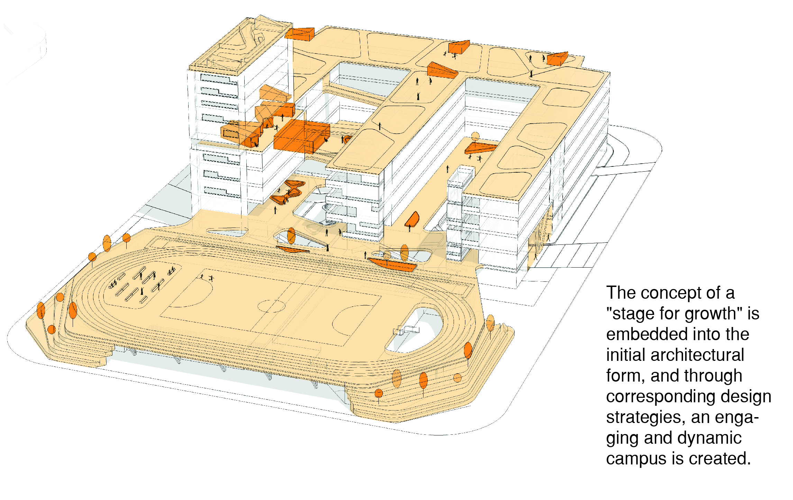
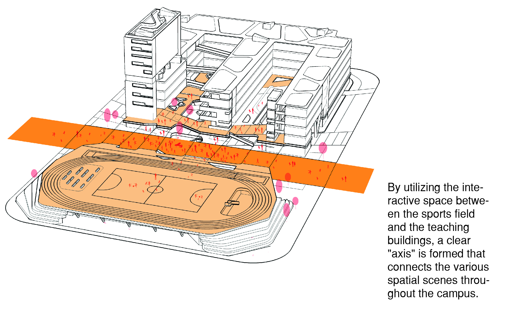
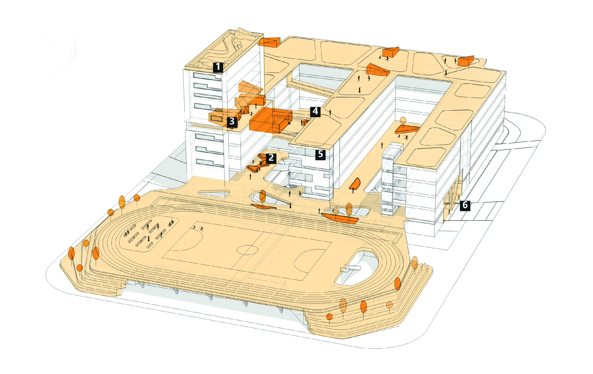
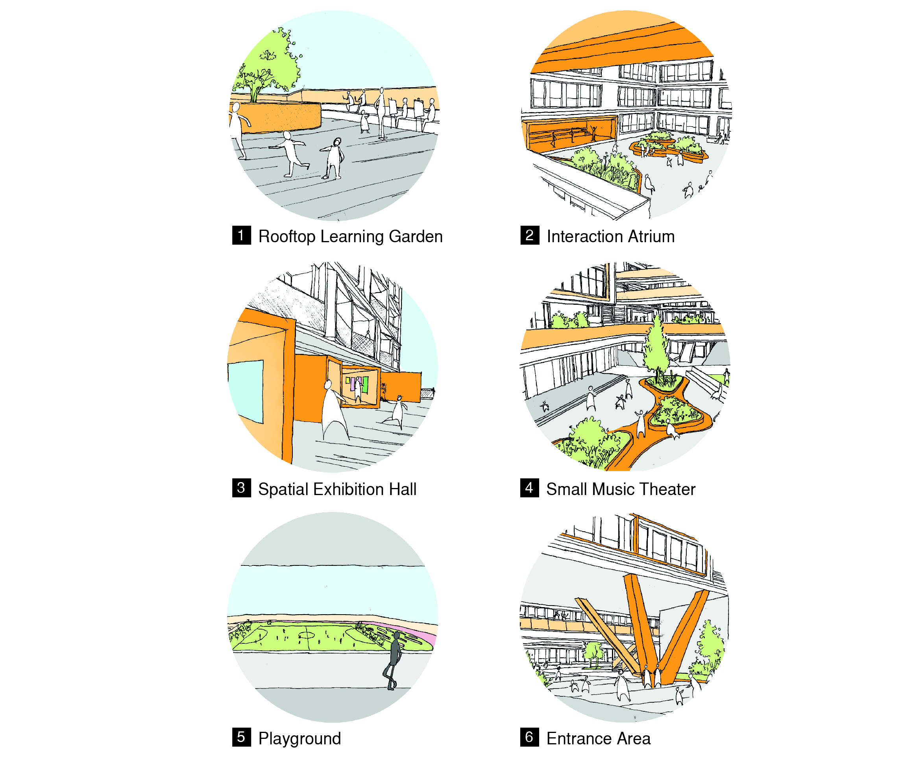
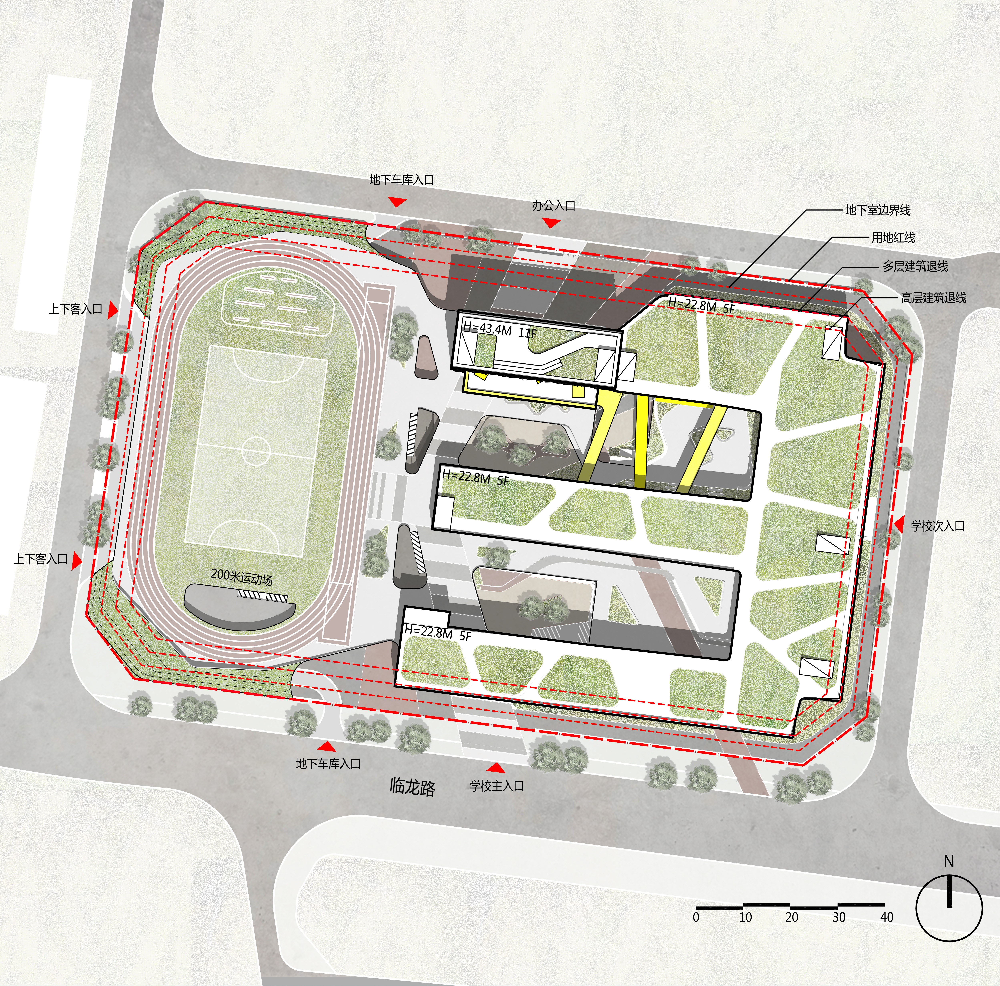
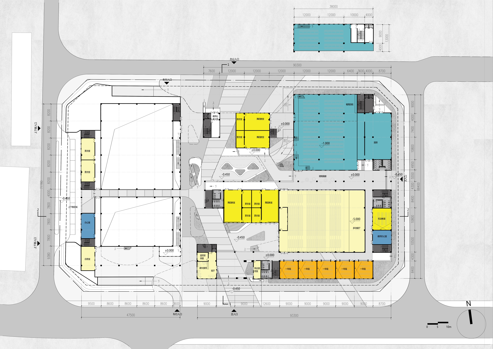
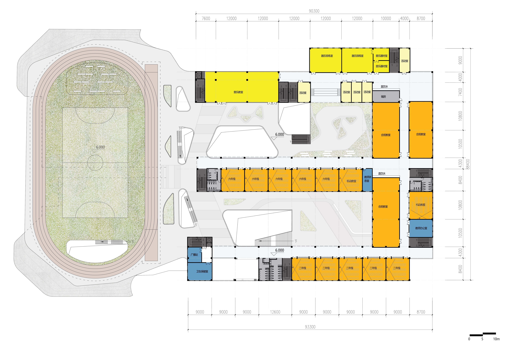